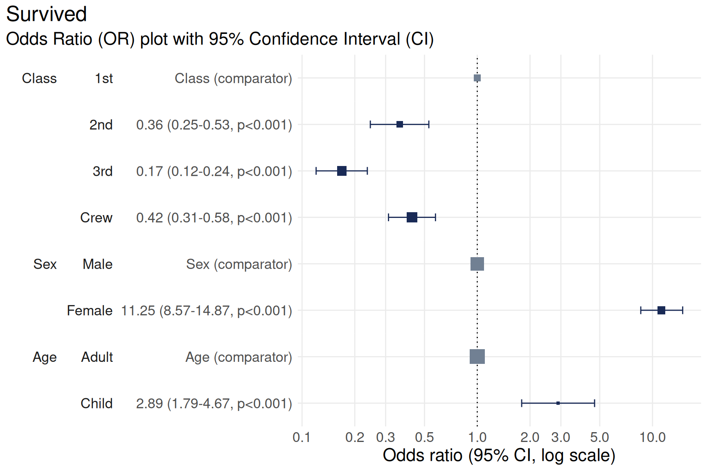
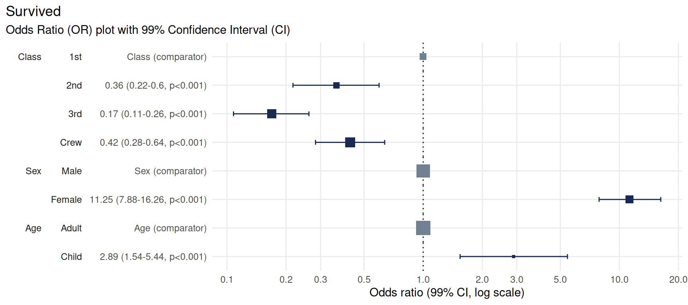
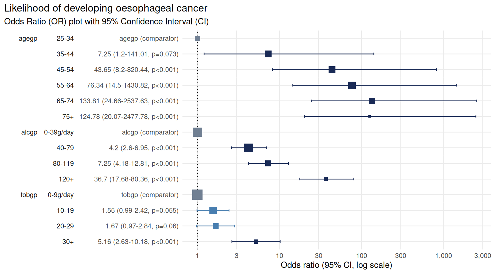
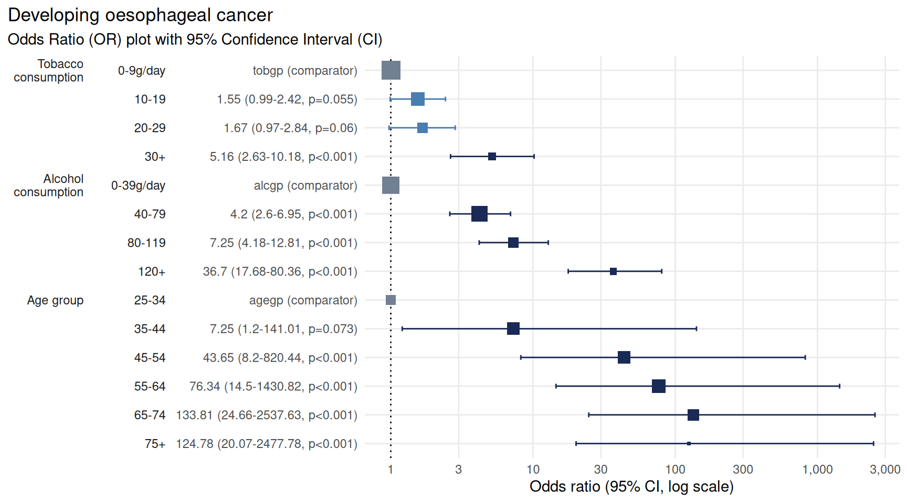

library(plotor)
library(dplyr)
library(datasets)
library(tidyr)
library(stats)
library(broom)
library(forcats)
library(ggplot2)plotor produces Odds-Ratio plots from a given logistic
regression model, as produced using the general linear model
(glm) package.
Installing plotor
plotor can be installed via GitHub using the
devtools package:
# install.packages("devtools")
devtools::install_github("craig-parylo/plotor")You can also install the latest released version from Cran with:
install.packages("plotor")Example 1 - using the Titanic survivors data set
Let’s start by exploring the likelihood of surviving the Titanic disaster based on passenger economic status (class), sex, and age group.
Get and prepare data
from the datasets package.
df <- datasets::Titanic |>
as_tibble() |>
# convert counts to observations
filter(n > 0) |>
uncount(weights = n) |>
# convert categorical variables to factors.
# we specify an order for levels in Class and Survival, otherwise ordering
# in descending order of frequency
mutate(
Class = Class |>
fct(levels = c('1st', '2nd', '3rd', 'Crew')),
Sex = Sex |>
fct_infreq(),
Age = Age |>
fct_infreq(),
Survived = Survived |>
fct(levels = c('No', 'Yes'))
)
# preview the data
df |> glimpse()
#> Rows: 2,201
#> Columns: 4
#> $ Class <fct> 3rd, 3rd, 3rd, 3rd, 3rd, 3rd, 3rd, 3rd, 3rd, 3rd, 3rd, 3rd, 3…
#> $ Sex <fct> Male, Male, Male, Male, Male, Male, Male, Male, Male, Male, M…
#> $ Age <fct> Child, Child, Child, Child, Child, Child, Child, Child, Child…
#> $ Survived <fct> No, No, No, No, No, No, No, No, No, No, No, No, No, No, No, N…We now have a tibble of data containing four columns:
Survived- our outcome variable describing whether the passenger survivedYesor diedNo,Class- the passenger class, either1st,2nd,3rdorCrew,Sex- the gender of the passenger, eitherMaleorFemale,Age- whether the passenger was anAdultorChild.
We next conduct a logistic regression of survival (as a binary
factor: ‘yes’ and ‘no’) against the characteristics of passenger class,
sex and age group. For this we use the Generalised Linear Model function
(glm) from the stats package, specifying:
the family as ‘binomial’, and
the formula as survival being a function of
Class,SexandAge.
# conduct a logistic regression of survival against the other variables
lr <- glm(
data = df,
family = 'binomial',
formula = Survived ~ Class + Sex + Age
)
# preview the model as a tidy table
lr |>
tidy() |>
glimpse()
#> Rows: 6
#> Columns: 5
#> $ term <chr> "(Intercept)", "Class2nd", "Class3rd", "ClassCrew", "SexFema…
#> $ estimate <dbl> -0.3762229, -1.0180950, -1.7777622, -0.8576762, 2.4200603, 1…
#> $ std.error <dbl> 0.1361769, 0.1959969, 0.1715657, 0.1573387, 0.1404093, 0.244…
#> $ statistic <dbl> -2.762751, -5.194443, -10.361993, -5.451147, 17.235750, 4.35…
#> $ p.value <dbl> 5.731642e-03, 2.053331e-07, 3.691891e-25, 5.004592e-08, 1.43…Finally, we can plot the Odds Ratio of survival using the
plot_or function.
# using plot_or
plot_or(glm_model_results = lr)
This plot makes it clear that:
Children were 2.89 times more likely to survive than Adults,
Passengers in
2nd,3rdclass as well asCrewwere all less likely to survive than those in1stclass,Women were 11.25 times more likely to survive than men.
Note on plot features
The primary components of an Odds-Ratio plot are dots, whiskers and the line of no effect.
The dot represents the point estimate for the Odds-Ratio, which indicates how much more likely the event is than the comparator event.
The width of the whiskers represents the Confidence Interval, a range of values the point estimate (the dot) is likely to fall within if the study were to be repeated, most often with a probability of 95%.
The line of no effect is set at a value of 1. Events whose confidence intervals touch or cross this line are considered to show no difference in likelihood than the comparator event.
The size of the dots is proportional to the number of observations.
In the above, the size of the Adult square is much larger
than the Child square, because there were 20 times more
adults on the ship than children. This feature can help contextualise
the findings from OR plots.
Change base font size
To increase the size of the font you can extend the returned plot
using the theme
function from ggplot2. Here we set the base size of all
fonts in the plot to size 16.
plot_or(glm_model_results = lr) +
theme(text = element_text(size = 16))
Specify the breaks
Odds Ratio (OR) plots produced by plotor are displayed
using a log10 x-axis.
By default ten breaks are shown, however, this can be altered by
extending the scale_x_log10
function from ggplot2. Here we provide a manual list of
breaks to use:
plot_or(glm_model_results = lr) +
scale_x_log10(breaks = c(0.1, 0.5, 1, 5, 10))
Change the confidence level
Confidence Intervals are calculated using a percentage confidence, called the Confidence Level, which sometimes range from 80% to 99% but 95% is most commonly-used.
The default in {plotor} is 95% but from version 0.5.3 onward you can
change this by specifying a conf_level parameter in your
plot_or() call. Here we set the Confidence Level to 99% for
the Titanic data set:
plot_or(glm_model_results = lr, conf_level = 0.99)
Notice how the whiskers have grown slightly? This is because we wished to be more confident (an additional 4% on top of the 95% we used previously) that the Confidence Interval covers all values the Odds Ratio estimate could take if we were to repeat this experiment multiple times. Thus the Confidence Interval was increased to match our expected Confidence Level.
In this example the increased length of the resulting Confidence
intervals still do not cross the dotted line and so do not affect our
conclusions that 1st class passengers were more likely to
survive than all other classes of people, Women were more
likely to survive than Men and Children were
more likely to survive than Adults.
Change the dot and whisker colours
There are three types of colours used for the dots and whiskers in the OR plot, depending on their category.
Significantrefers to dots where their results indicate a significant finding because their 95% confidence intervals do not touch or cross the value 1 - the line of no effect.Comparatorrefers to the level of a factor in the model against which the Odds Ratios are calculated.Not significantrefers to dots where their results do not indicate a significant finding because their confidence intervals touch or cross the line of no effect.
The colours for these points can be changed by extending the output
using scale_colour_manual
function from ggplot2 with a named vector specifying colour
values for the three types of colours:
plot_or(glm_model_results = lr) +
scale_colour_manual(values = c(
'Significant' = '#44bd32',
'Comparator' = '#8c7ae6',
'Not significant' = '#e84118')
)
Change the title, subtitle and add a caption
plotor uses the dependent variable as the title of the
plot by default with a subtitle indicating this it is an Odds Ratio plot
with a 95% confidence interval.
The plot can be customised with your own title, subtitle and add a
caption by extending the labs
function of ggplot2.
plot_or(glm_model_results = lr) +
labs(
title = 'Passenger survival from the Titanic disaster',
subtitle = 'Odds Ratio of survival by Class, Age and Gender',
caption = 'Data source: Dawson, Robert J. MacG. (1995), The ‘Unusual Episode’ Data Revisited. Journal of Statistics Education, 3. doi:10.1080/10691898.1995.11910499'
)
Example 2 - using the Smoking, Alcohol and Oesophageal Cancer data set
This data
set comes from a case-control study of oesophageal cancer in
Ile-et-Vilaine, France. In addition to the outcome variable,
Group, identifying who is a case (developed cancer) or a
control (disease free), it contains three explanatory variables:
agegp- the age group of each participant,alcgp- the alcohol consumption of each participant, measured in grams per day,tobgp- the tobacco consumption of each participant, measured in grams per day.
To look at the likelihood of a participant to develop oesophageal cancer we can perform logistic regression against these variables.
df <- datasets::esoph |>
# convert aggregated data to tidy observational data
tidyr::pivot_longer(
cols = c(ncases, ncontrols),
names_to = 'Group',
values_to = 'people'
) |>
uncount(weights = people) |>
# prepare the variables
mutate(
# convert the intervention group to a factor
Group = Group |>
case_match('ncases' ~ 'Case', 'ncontrols' ~ 'Control') |>
fct(levels = c('Control', 'Case')),
# remove the ordering from these factors so the glm model doesn't treat
# them as numeric
agegp = agegp |> factor(ordered = F),
alcgp = alcgp |> factor(ordered = F),
tobgp = tobgp |> factor(ordered = F)
)
# preview the data
df |> glimpse()
#> Rows: 975
#> Columns: 4
#> $ agegp <fct> 25-34, 25-34, 25-34, 25-34, 25-34, 25-34, 25-34, 25-34, 25-34, 2…
#> $ alcgp <fct> 0-39g/day, 0-39g/day, 0-39g/day, 0-39g/day, 0-39g/day, 0-39g/day…
#> $ tobgp <fct> 0-9g/day, 0-9g/day, 0-9g/day, 0-9g/day, 0-9g/day, 0-9g/day, 0-9g…
#> $ Group <fct> Control, Control, Control, Control, Control, Control, Control, C…Next we carry out the logistic regression and then plot the results.
# conduct the logistic regression
lr <- glm(
data = df,
family = 'binomial',
formula = Group ~ agegp + alcgp + tobgp
)
# plot the odds ratio plot with customised title
plot_or(lr) +
labs(title = 'Likelihood of developing oesophageal cancer')
From this we can see there is a strong link between age and
likelihood of cancer. Compared with those in the 25-34
years group there is a statistically significant increased likelihood of
being in the case cohort of those in the 45-54 years group
(43 times more likely), 55-64 years group (76 times more
likely), 65-74 years group (133 times more likely), and
75+ years group (124 times more likely).
There is also a strong link between alcohol consumption and likelihood of cancer. Compared with those who consumed the least alcohol, defined as between 0 and 39 g/day, those who consumed more alcohol are more at risk of developing cancer with the greatest risk in those who consumed more than 119 g/day, putting them at 36 times more likely to develop cancer.
Tobacco use is a more nuanced picture. There was no detectable
difference in the likelihood of developing cancer for those in the first
three groups (0-9g/day, 10-19g/day and
20-29g/day) - seen by the confidence intervals crossing the
line of no effect. However, there was a statistically significant
increased risk of developing cancer in those who consumed the most
tobacco, 30+g/day, putting them at 5 times the risk.
Use variable labels
Replacing variable names with a more descriptive label makes the
plots more accessible to those not involved in the analysis. For
example, Alcohol consumption (g/day) is a more
user-friendly label than the name of the variable,
alcgp.
There are some amazing packages designed to help label your data. In
the below example we use the labelled
package to label our data before analysing and plotting it.
# library to apply labels to data
library(labelled)
# create a list of variable = labels
var_labels <- list(
agegp = 'Age group',
alcgp = 'Alcohol consumption',
tobgp = 'Tobacco consumption',
Group = 'Developing oesophageal cancer'
)
# label the variables in our data
labelled::var_label(df) <- var_labels
# preview the data with labels appplied
labelled::look_for(df)
#> pos variable label col_type missing values
#> 1 agegp Age group fct 0 25-34
#> 35-44
#> 45-54
#> 55-64
#> 65-74
#> 75+
#> 2 alcgp Alcohol consumption fct 0 0-39g/day
#> 40-79
#> 80-119
#> 120+
#> 3 tobgp Tobacco consumption fct 0 0-9g/day
#> 10-19
#> 20-29
#> 30+
#> 4 Group Developing oesophageal cancer fct 0 Control
#> CaseAnalyse the data using logistic regression as before and plot the result.
# conduct the logistic regression
lr <- glm(
data = df,
family = 'binomial',
formula = Group ~ agegp + alcgp + tobgp
)
# plot the odds ratio plot using variable labels
plot_or(lr)plot_or recognises the use of labels and uses these in
preference to variable names wherever available.
Using variable labels makes plots easier to read and more accessible, and is especially useful where you want to include the chart in reports or publications.
Control covariate order
Sometimes it can be useful to control the ordering of covariates in the plots. This can be done to group similar variables together, such as demographics, or arrange the covariates in a more pleasing order.
For example, imagine we wish to display our tobacco consumption Odds Ratios at the top of the plot because this is the main focus of our study and wish to draw attention to these findings. The age group can be put at the bottom of the plot.
As of version 0.5.2 onwards plotor facilitates this need by respecting the order in which the covariates are listed in the model.
# conduct the logistic regression with tobacco listed first in the 'formula'
lr <- glm(
data = df,
family = 'binomial',
formula = Group ~ tobgp + alcgp + agegp
)
# plot the odds ratio plot using variable labels
plot_or(lr)
We now have tobacco as the first covariate on the y-axis and age group as the last covariate.
Summarise in a table
Odds Ratio plots are often accompanied by summary tables in academic papers. These tables provide details not always visible from the plot, such as the number of observations in each category and the conversion rate from the base population to those with the outcome of interest.
From version 0.5.3 plotor can produce these summary
tables using the new function table_or() as either a
tibble or a publication-ready gt table.
table_or(lr, output = 'tibble')
#> Warning: Some of your categorical predictor variables have levels with
#> too few outcomes.
#> ℹ One or more assumptions for logistic regression have failed. To gain further
#> insights, consider calling the `plotor::check_or()` function. For example, you
#> can run `plotor::check_or(lr, details = TRUE)`.
#> # A tibble: 14 × 14
#> label level rows outcome outcome_rate class estimate std.error statistic
#> <fct> <fct> <int> <int> <dbl> <chr> <dbl> <dbl> <dbl>
#> 1 "Age gro… 25-34 116 1 0.00862 fact… NA NA NA
#> 2 "Age gro… 35-44 199 9 0.0452 fact… 7.25 1.10 1.79
#> 3 "Age gro… 45-54 213 46 0.216 fact… 43.7 1.07 3.54
#> 4 "Age gro… 55-64 242 76 0.314 fact… 76.3 1.06 4.07
#> 5 "Age gro… 65-74 161 55 0.342 fact… 134. 1.08 4.55
#> 6 "Age gro… 75+ 44 13 0.295 fact… 125. 1.12 4.30
#> 7 "Alcohol… 0-39… 415 29 0.0699 fact… NA NA NA
#> 8 "Alcohol… 40-79 355 75 0.211 fact… 4.20 0.250 5.74
#> 9 "Alcohol… 80-1… 138 51 0.370 fact… 7.25 0.285 6.96
#> 10 "Alcohol… 120+ 67 45 0.672 fact… 36.7 0.385 9.36
#> 11 "Tobacco… 0-9g… 525 78 0.149 fact… NA NA NA
#> 12 "Tobacco… 10-19 236 58 0.246 fact… 1.55 0.228 1.92
#> 13 "Tobacco… 20-29 132 33 0.25 fact… 1.67 0.273 1.88
#> 14 "Tobacco… 30+ 82 31 0.378 fact… 5.16 0.344 4.77
#> # ℹ 5 more variables: p.value <dbl>, conf.low <dbl>, conf.high <dbl>,
#> # significance <chr>, comparator <dbl>The tibble contains details
labelcontaining the name or label for the variables,leveldescribing the contents of categorical variables,rowsenumerating the number of observations relevant to each category level,outcomeenumerating the number of observations which resulted in the outcome of interest,outcome_rateshowing the conversion fromrowstooutcome,classdescribing the data class for the variable,estimateis the Odds Ratio point estimate,std.erroris the standard error for the Odds Ratio,p.valueis the probability of producing the Odds Ratio estimate by chance,conf.lowis the lower confidence interval,conf.highis the upper confidence interval,significanceis a description of whether the Odds Ratio is statistically significant, with reference to the confidence interval,
The tibble format means this information can be re-used in custom tables and visualisations.
Specify output = 'gt' to get a publication-quality html
table made using the gt package.
table_or(lr, output = 'gt') |>
gt::tab_options(container.width = 1100)
#> Warning: Some of your categorical predictor variables have levels with
#> too few outcomes.
#> ℹ One or more assumptions for logistic regression have failed. To gain further
#> insights, consider calling the `plotor::check_or()` function. For example, you
#> can run `plotor::check_or(lr, details = TRUE)`.| Developing oesophageal cancer | ||||||||||||
| Odds Ratio summary table with 95% Confidence Interval | ||||||||||||
|
Characteristic1
|
Odds Ratio (OR)2
|
95% Confidence Interval (CI)3
|
OR Plot | |||||||||
|---|---|---|---|---|---|---|---|---|---|---|---|---|
| Level | N | n | Rate | Class | OR | SE | p | Lower | Upper | Significance | ||
| Age group | 25-34 | 116 | 1 | 0.86% | factor | — | — | — | — | — | Comparator | |
| 35-44 | 199 | 9 | 4.52% | factor | 7.249 | 1.104 | 7.27 × 10−2 | 1.202 | 141.0 | Significant | ||
| 45-54 | 213 | 46 | 21.6% | factor | 43.65 | 1.068 | 4.06 × 10−4 | 8.204 | 820.4 | Significant | ||
| 55-64 | 242 | 76 | 31.4% | factor | 76.34 | 1.065 | 4.68 × 10−5 | 14.50 | 1,431 | Significant | ||
| 65-74 | 161 | 55 | 34.16% | factor | 133.8 | 1.076 | 5.38 × 10−6 | 24.66 | 2,538 | Significant | ||
| 75+ | 44 | 13 | 29.55% | factor | 124.8 | 1.121 | 1.67 × 10−5 | 20.07 | 2,478 | Significant | ||
| Alcohol consumption | 0-39g/day | 415 | 29 | 6.99% | factor | — | — | — | — | — | Comparator | |
| 40-79 | 355 | 75 | 21.13% | factor | 4.198 | 0.2501 | 9.63 × 10−9 | 2.600 | 6.948 | Significant | ||
| 80-119 | 138 | 51 | 36.96% | factor | 7.248 | 0.2848 | 3.51 × 10−12 | 4.183 | 12.81 | Significant | ||
| 120+ | 67 | 45 | 67.16% | factor | 36.70 | 0.3850 | 8.19 × 10−21 | 17.68 | 80.36 | Significant | ||
| Tobacco consumption | 0-9g/day | 525 | 78 | 14.86% | factor | — | — | — | — | — | Comparator | |
| 10-19 | 236 | 58 | 24.58% | factor | 1.550 | 0.2283 | 5.50 × 10−2 | 0.9885 | 2.423 | Not significant | ||
| 20-29 | 132 | 33 | 25% | factor | 1.670 | 0.2730 | 6.04 × 10−2 | 0.9714 | 2.839 | Not significant | ||
| 30+ | 82 | 31 | 37.8% | factor | 5.160 | 0.3441 | 1.85 × 10−6 | 2.631 | 10.18 | Significant | ||
|
1 Characteristics are the explanatory variables in the logistic regression analysis. For categorical variables the first characteristic is designated as a reference against which the others are compared. For numeric variables the results indicate a change per single unit increase.
Level - the name or the description of the explanatory variable. N - the number of observations examined. n - the number of observations resulting in the outcome of interest. Rate - the proportion of observations resulting in the outcome of interest (n / N). Class - description of the data type. |
||||||||||||
|
2 Odds Ratios estimate the relative odds of an outcome with reference to the Characteristic. For categorical data the first level is the reference against which the odds of other levels are compared. Numerical characteristics indicate the change in OR for each additional increase of one unit in the variable.
OR - The Odds Ratio point estimate - values below 1 indicate an inverse relationship whereas values above 1 indicate a positive relationship. Values shown to 4 significant figures. SE - Standard Error of the point estimate. Values shown to 4 significant figures. p - The p-value estimate based on the residual Chi-squared statistic. |
||||||||||||
|
3 Confidence Interval - the range of values likely to contain the OR in 95% of cases if this study were to be repeated multiple times. If the CI touches or crosses the value 1 then it is unlikely the Characteristic is significantly associated with the outcome.
Lower & Upper - The range of values comprising the CI, shown to 4 significant figures. Significance - The statistical significance indicated by the CI, Significant where the CI does not touch or cross the value 1. |
||||||||||||
The main features of this table include:
number formatting such as thousands separators for counts and rounding to the nearest four significant figures to prevent precision clutter,
footnotes explaining each section and providing a key to the column headings,
title defaulting to the outcome variable and subtitle providing a description of what the table contains, these can be changed by extending {gt} functions.
a simple OR plot to give a sense of the distributions of Odds Ratio estimates.